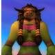

Les Terres de Kirin Tor
Filbrehim
Points : 3

Joué par :
[ Information masquée ]
Age : 23
Lieu de naisance : nuage rouge
Sexe : Femme
Race : Tauren
Faction : Horde
Formation : Chasseur
Niveau : 42
Guilde :
Artisanat 1 : Herboriste
Artisanat 2 : Dépeceur
Envoyer un MP
Troisième Ère [1]
Lune de la Force
Décade du Panda
Décade du Gorille
Décade de l'Ours
Lune d'Agilité
Décade du Tigre
Décade du Singe
Décade du Faucon
Lune de l'Esprit [1]
Décade de la Chouette
Décade de la Baleine
Décade du Lapin [1]
La Marche des Kodos
Alors que la nuit venait de tomber, nous étions quelques uns rassemblés autour du feu de Zarlan Deux-Lunes à Bloodhoof.
Il y avait une majorité d'anciens qui venait participer à la cérémonie de la Marche des Kodos. Sans doute la présence de la foire de Sombrelune au pied de Thunderbluff avait attiré les plus jeunes.
Néanmoins, que ce soit à pied ou en Kodo, une vingtaine de Taurens étaient là. On compta aussi d'autre représentants de la Horde.
le départ de bloodhoof
Aprés une brève explication sur l'origine de cette marche, Vhaal lança la cérémonie par une prière à la terre mère.
Nous le suivîmes ensuite au pas jusqu'à Taurache.
Nous nous sommes arrêtés à Taurache le temps de laisser les retardataires nous rejoindre, Runga en profita pour nous raconter une histoire de la plaine.
Nous en avons profité pour expliquer aux promeneurs de passage la raison de cette marche.
Nous avons ensuite couru jusqu'à la Croisée (nous avons peut-être un peu 'bousculé' des lézard tempêtes, chasseurs tranchecrins et autre fâcheux qui étaient sur notre chemin).
Le voyage s'est poursuivi sans encombres, Lieu de l'honneur, puis Poste de garde.
nous fûmes rejoints par deux elfes (Kaliss et Möya) qui souhaitaient se joindre à nous.
Nous les avons acceptés sans problème.
Comme il était hélas facile de le prévoir, les rustres du totem sinistre nous ont pris de haut et nous ont interdit de passer sur 'leur' territoire !!!
Là ou les Kodos marchaient bien avant leur arrivée (et leur félonie), ils osent dire 'leur territoire'!!
Nous les avons donc promptement raisonnés.
Nous avons repris la marche à partir de Roche Soleil (en partie car nous approchions du cimetière des Kodos, en partie pour protéger plus efficacement les plus jeunes).
le passage du Val Calciné
Au final, au bout de la route, nous étions une petite trentaine (plus deux elfes) pour la dernière prière dite par Vhaal dans le cimetière.
l'arrivée en Desolace
Nous avons ensuite poursuivi la soirée à la Proie de l'Ombre, dans une ambiance moins emprunte de recueillement ....
Filbrehim pour le troupeau.


Quatrième Ère [1]
Lune de la Force
Décade du Panda
Décade du Gorille
Décade de l'Ours
Lune d'Agilité
Décade du Tigre
Décade du Singe
Décade du Faucon
Lune de l'Esprit [1]
Décade de la Chouette [1]
le retour des saisons (introduction)
Qui veut la peau d'Oh-Zone ?
L’autre jour je discutais avec Gromak Thunderhoof devant le feu de Cairn.
-Dis-moi Gromak, j’ai lu, au cours d’une de mes visites au monastère écarlate, un récit humain qui parle de « saison des frimas » …
-tu lis l’humain Fil ? Bien que nous ne soyons pas en guerre, nos relations sont tendues, cela pourrait être mal interprété !
-à vrai dire, j’ai utilisé un traducteur gobelin …
-un traducteur gobelin, bien sure …
-hors donc, il y était question de « saison des frimas », le traducteur m’a précisé que « frimas » est un mot archaïque qui désigne le froid. Mais n’a rien pu me dire à propos de saison.
Gromak prit un air pensif.
-à dire vrai les saisons ont disparu depuis l’arrivé du fléau, les plaines de Mulgoore ne sont plus recouvertes de neige en hiver, alors que la vallée de Dun-Morgoth est perpétuellement enneigée.
-Dun-Morgoth ?
-la vallée de Dun-Morgoth héberge Ironforge, les distilleries, brasseries et fabriques de fusils des nains.
-je note que les distilleries et brasseries passent avant les fabriques de fusil, et que tu as des relations avec les nains, bien que nous ne soyons pas en guerre, nos rapports sont tendus, cela pourrait être mal interprété !
-mpf ! Si tu veux que je réponde à ta question, ne m’interrompt pas avec des impertinences !
-oui Gromak.
-avant l’arrivé du fléau le temps changeait, il y avait l’été ou il faisait chaud, comme aujourd’hui dans les Tarrides ou les Salines, et l’hiver qui était plutôt froid, la neige tombait en abondance.
L’arrivé du fléau a perturbé ce cycle, bien que la végétation continue à pousser.
Lorsque le monde fut créé par les Titans, il y a longtemps, le titan Oh-zone se défit de sa peau qu’il étendit sur Azeroth pour le protéger des agressions extérieurs.
Cette peau battant au rythme de sa vie nous donna les saisons que nous connaissions.
Lorsque le fléau voulut envahir Azeroth, il découpa un trou dans cette peau, et c’est depuis lors que les saisons sont déréglées.
-alors, les dérèglements des saisons sont liés à un trou dans la peau d’Oh-zone ?
-en quelque sorte.
-mais n’y peut-on rien faire ?
-il faudrait commencer par retrouver ce fragment de peau.
-mais que ne l’a t-on point cherché ?
-a vrai dire, personne ne sait ou il est.
-personne ? Vraiment ?
-personne je te dis ! d’ailleurs si tu le savais irais-tu le chercher ?
-.. euh, oui !
-seule ?
-ben je suppose que j’appellerais quelques braves à l’aide.
-c’est fort bien, appelle-les !!
Après un coup d’œil furtif en direction de Cairn, Gromak me chuchotas quelques mots à l’oreille.
Décade de la Baleine
Décade du Lapin
Cinquième Ère [1]
Lune de la Force
Décade du Panda
Décade du Gorille
Décade de l'Ours
Lune d'Agilité [1]
Décade du Tigre
Décade du Singe
Décade du Faucon [1]
Oh-Zone, le cratère de sélection ?
Nous entrerons dans le cratère quand nos ainés n'y seront plus ...
La Plaine s’était réunie à Brill, comme l’avait demandé Magatha.
L’apothicaire Jehan fut fort mécontent de voir débarquer dans sa boutique toutes sortes d’animaux, il chassa donc animaux et propriétaires dehors à grands cris. (Les propriétaires furent fort heureux de sortir n’osant imaginer ce qui arriverait si leurs bestioles buvaient ou respiraient le contenu d’une de ses fioles)
-Magatha m’a parlé de votre visite, vous vous demandé si vous avez réussi ou non ?
-Oui, en effet.
-Eh bien le Titan Oh-Zone à bien existé, et sa peau recouvre bien le monde.
-Ah ! Et donc c’est le Fléau ou Thermaplug qui est responsable du trou ?
-L’un et l’autre
-Thermaplug travaille pour le fléau ???
-Après la deuxième guerre, le fléau fut banni de notre monde, presque.
Il instilla à Thermaplug le désir de provoquer cette explosion, celle-ci fragilisa la peau d’Oh-Zone et permit au fléau de reprendre pied sur Azeroth.
-Et un fragment est retombé sur Kalimdor ?
-Je ne sais pas, avez-vous fouillé les salines ?
-C’est que c’est profond !! Sept fois la hauteur d’un tauren ! Et payer les descendants des gnomes pour analyser les conséquences de leur bêtise ne nous enchante guère !
-Certes, mais il y a un endroit où la couche de sel est moins grande : le cratère de Weazel, l’avez-vous exploré ?
(les chasseurs choisirent ce moment pour nourrir les familiers, les druides pour se transformer et gambader un peu, les chaman avaient d’urgent messages télépathiques à envoyer)
Jehan reprit (avec l’esquisse d’un sourire) :
-vous l’avez exploré ?
-nonmaisouimaisnonmaisonsavaitpas…
-Vous pouvez commencer par-là, il n’a pas dû aller bien loin.
Un cratère de choix
La plaine prit congé de Jehan, reprit le dirigeable et les wyvernes jusqu’aux Milles Pointes.
Des Milles Pointes, nous avons gagné le cratère de Weazel en quelques coups de Kodos. Après que Blackpelt eût ‘sécurisé la zone’ nous avons exploré le cratère, nous avons pendant une bonne heure émoussé le fil de nos haches, oxydé nos épées et corrodé le métal de nos marteaux avant que finalement Runga sente une substance particulière, qui n’était ni cuir ni métal. La matière résistait à nos tentatives de l’arracher, même la légendaire canne à pêche des Gobelins n’en vint pas à bout. J’avais bien entendu parler de seaforium, mais personne n’en avait sous la main. Qui plus est, il n’y avait aucun ingénieur parmis nous …
Nous nous sommes d’abord dirigé vers la piste des mirages, ces enragés de pilotes devaient bien avoir quelques explosifs (ne serait-ce que pour ‘ralentir’ un adversaire durant la course). Hélas, non !!
Nous nous sommes ensuite dirigés vers Gadgetzan, dans l’espoir d’en trouver à l’Hôtel des Ventes. Malheureusement il n’y en avait point !!
Nous avons interrogé les habitants de gadzetan et les voyageurs de passage, mais hélas sans résultat !!
Runga vola même jusqu’à Ogrimmar, mais là non plus on ne trouvait pas de seaforium !!
J’ai alors invoqué le sortilège du cercle rouge :
-quand le destin doit se manifester, on trace un cercle rouge sur le sol, chacun part dans une direction différente, le jour dit et à l’heure dite, les Shu-Alo se retrouvent au sein du cercle rouge.
J’ai tracé le cercle rouge sur le sol en disant :
-Dans une semaine, les Shu-Alo seront dans ce cercle avec le seaforium !! dispersez-vous aux point cardinaux !!!
Lune de l'Esprit
Décade de la Chouette
Décade de la Baleine
Décade du Lapin